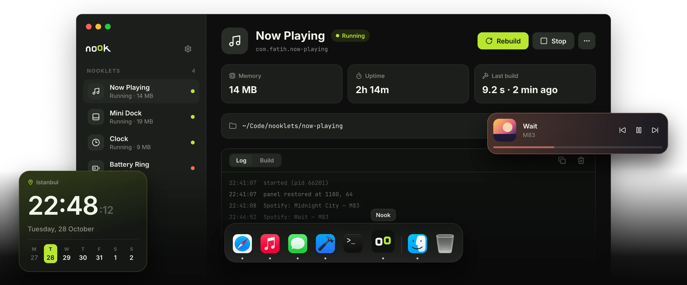

v0.1.2 · open source · macOS 14+
Tiny native apps
for your Mac.
Write a nooklet in Swift. Nook builds it, runs it in the background and keeps it alive after you close the window.
curl -fsSL nook.fatihsen.dev/install.sh | sh
Universal · Apple Silicon and Intel · needs the Swift toolchain · also as .zip

How it works
Three steps, no per-app setup.
A nooklet is a regular Swift package. Nook takes care of building, running and keeping it alive.
-
Step 01
Create
Pick a folder and a name. Nook writes a starter package with nook.json and an entry file.
nook.jsonPackage.swiftSources/app.swift
-
Step 02
Build
Open it in Xcode, write SwiftUI or AppKit. Press Run and Nook builds a release binary.
$ swift build -c releaseBuild complete! (4.2 s)
-
Step 03
Forget it
launchd keeps it running, starts it at login and restarts it after a crash. Close Nook, it stays.
Running · 14 MBuptime 2h 14m
Why Nook
Small on purpose.
Your design, all of it
SwiftUI or AppKit, any shape. Nook draws no chrome around your panel.
Native and light
Compiled binaries, no web view, no interpreter. A clock uses about 9 MB.
One crash stays one crash
Every nooklet is its own process, supervised by launchd.
Outlives the manager
Quit Nook and your nooklets keep running, even after a reboot.
Just a folder
A nooklet is a Swift package. Put it in its own repo and share it.
Logs and errors built in
Live logs, build output and a jump to the failing line in Xcode.
Write one
This is the whole nooklet.
A complete clock in fourteen lines. Everything else is up to you.
import NookKit
import SwiftUI
@main
struct Clock: Nooklet {
var body: some NookScene {
FloatingPanel(position: .topTrailing) {
TimelineView(.everyMinute) { context in
Text(context.date, style: .time)
.font(.system(size: 56, weight: .semibold))
}
}
}
}on your desktop, after one click on Run
For developers
Plain Swift. Plain macOS APIs.
NookKit gives you a panel and a log. Everything else is the Swift and AppKit you already know. A few recipes to start from:
import AppKit
import NookKit
import SwiftUI
@main
struct MiniDock: Nooklet {
var body: some NookScene {
FloatingPanel(position: .bottom) {
DockView()
}
}
}
struct DockView: View {
@State private var apps = NSWorkspace.shared.runningApplications
.filter { $0.activationPolicy == .regular }
var body: some View {
HStack(spacing: 6) {
ForEach(apps, id: \.processIdentifier) { app in
Image(nsImage: app.icon ?? NSImage())
.resizable()
.frame(width: 40, height: 40)
.onTapGesture { app.activate() }
}
}
.padding(10)
.background(.ultraThinMaterial, in: Capsule())
}
}import AppKit
import NookKit
import SwiftUI
let spotifyChanged = Notification.Name("com.spotify.client.PlaybackStateChanged")
@main
struct NowPlaying: Nooklet {
var body: some NookScene {
FloatingPanel(position: .topLeading) {
TrackView()
}
}
}
struct TrackView: View {
@State private var title = "Nothing playing"
@State private var artist = ""
var body: some View {
VStack(alignment: .leading) {
Text(title).font(.headline)
Text(artist).foregroundStyle(.secondary)
}
.padding(16)
.onReceive(DistributedNotificationCenter.default()
.publisher(for: spotifyChanged)) { note in
title = note.userInfo?["Name"] as? String ?? title
artist = note.userInfo?["Artist"] as? String ?? artist
}
}
}import IOKit.ps
import NookKit
import SwiftUI
@main
struct Battery: Nooklet {
var body: some NookScene {
FloatingPanel(level: .desktop, position: .bottomTrailing) {
TimelineView(.periodic(from: .now, by: 60)) { _ in
Gauge(value: Double(batteryLevel() ?? 0), in: 0...100) {
Image(systemName: "battery.75percent")
}
.gaugeStyle(.accessoryCircularCapacity)
.padding(12)
}
}
}
}
func batteryLevel() -> Int? {
let info = IOPSCopyPowerSourcesInfo().takeRetainedValue()
let sources = IOPSCopyPowerSourcesList(info).takeRetainedValue() as [CFTypeRef]
guard let source = sources.first,
let details = IOPSGetPowerSourceDescription(info, source)?
.takeUnretainedValue() as? [String: Any]
else { return nil }
return details[kIOPSCurrentCapacityKey] as? Int
}import Darwin
import NookKit
import SwiftUI
@main
struct SystemStats: Nooklet {
var body: some NookScene {
FloatingPanel(position: .topTrailing) {
TimelineView(.periodic(from: .now, by: 2)) { _ in
Text("RAM \(usedMemory(), format: .byteCount(style: .memory))")
.font(.system(.body, design: .monospaced))
.padding(12)
}
}
}
}
func usedMemory() -> Int64 {
var stats = vm_statistics64()
var count = mach_msg_type_number_t(
MemoryLayout<vm_statistics64>.size / MemoryLayout<integer_t>.size)
let result = withUnsafeMutablePointer(to: &stats) {
$0.withMemoryRebound(to: integer_t.self, capacity: Int(count)) {
host_statistics64(mach_host_self(), HOST_VM_INFO64, $0, &count)
}
}
guard result == KERN_SUCCESS else { return 0 }
let pages = Int64(stats.active_count) + Int64(stats.wire_count)
+ Int64(stats.compressor_page_count)
return pages * Int64(vm_kernel_page_size)
}import NookKit
import SwiftUI
@main
struct Pomodoro: Nooklet {
var body: some NookScene {
FloatingPanel(position: .center) {
TimerView()
}
}
}
struct TimerView: View {
@State private var isRunning = false
var body: some View {
Button(isRunning ? "Stop" : "Focus 25 min") {
isRunning.toggle()
writeLog(isRunning ? "focus started" : "focus stopped")
}
.padding(16)
.onAppear { writeLog("ready") }
}
}-
FloatingPanel
A borderless panel. Users drag it anywhere, Nook remembers where.
FloatingPanel( level: .floating, position: .topTrailing ) { MyView() } -
PanelLevel · PanelPosition
Desktop, normal or floating. Seven starting spots.
level: .desktop | .normal | .floating position: .center | .top | .bottom .topLeading | .topTrailing .bottomLeading | .bottomTrailing -
writeLog
Shows up live in the Log tab, with a timestamp.
writeLog("now playing: \(title)") -
nook.json
The identity Nook reads. That's the whole manifest.
{ "id": "dev.you.mini-dock", "name": "Mini Dock", "product": "MiniDock" }
Make your first nooklet tonight.
Free and open source. One command to install.
curl -fsSL nook.fatihsen.dev/install.sh | sh